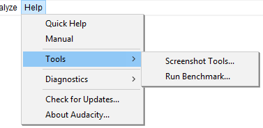

Help Menu: Tools
- Click, or hover, on any menu item in the image to read about that command. Skip the image
- 
Screenshot Tools...
Displays the "Screen Capture Frame" dialog. This tool lets you capture all or part of your project window to an image file in PNG format. Click the button to pick the location where you want to save the screenshot. Then click the button corresponding to the part of the project window you want to capture. Most of these buttons are self-explanatory.
- Tracks with their waveform or spectrogram (use any of the three buttons)
- Plots of amplitude against frequency for a selected region (use any of the buttons to capture the Frequency Analysis window on its own).
Capture entire window or screen
The buttons in this section enable you to take screenshots of particular parts of the screen.
Pressing any of these buttons will take the screenshot of that entity and place it in the location specified in Save images to.
- captures the window without its title bar.
- captures the window including its title bar.
- captures the window including its title bar, plus a small border region outside the window for context.
- captures the entire computer screen as you see it.
Capture part of a project window
The buttons in this section enable you to take screenshots of particular parts of the Audacity window such as toolbars and selected tracks.
Pressing any of these buttons will take the screenshot of that entity and place it in the location specified in Save images to.
Scale
The buttons in this section can be used to change the scale of the image prior to using one of the screenshot capture buttons above:
- The , and buttons zoom the project window horizontally so that a little more than the length indicated on the button is shown on the Timeline.
- The three buttons zoom all the tracks in the project to a preset height. For example, displays the tracks at minimal height so they only show the Audio Track Dropdown Menu and Collapse/Expand button .
Limitations:
|
Run Benchmark...
Performs a mock editing routine to test how fast Audacity runs on your machine, expressed in terms of the estimated number of simultaneous tracks that could be played at once in a 44100 Hz, 16 bits per sample project.
If the sample rate of the tracks differs from the Project Rate, causing real-time sample rate conversion, the number of tracks you can play may be lower than the Benchmark result. Using stereo or mono tracks, or using the default 32-bit sample format instead of 16-bit should not significantly change the number of tracks you can play.